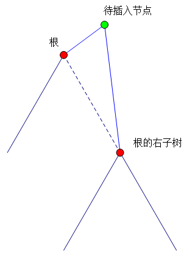

火星人最近研究了一种操作：求一个字串两个后缀的公共前缀。比方说，有这样一个字符串：madamimadam，我们将这个字符串的各个字符予以标号：
| 序号 | 1 | 2 | 3 | 4 | 5 | 6 | 7 | 8 | 9 | 10 | 11 |
| 字符 | m | a | d | a | m | i | m | a | d | a | m |
现在，火星人定义了一个函数 LCQ(x, y)，表示：该字符串中第 $x$ 个字符开始的字串，与该字符串中第 $y$ 个字符开始的字串，两个字串的公共前缀的长度，比方说，LCQ(1, 7) = 5, LCQ(2, 10) = 1, LCQ(4, 7) = 0。
在研究 LCQ 函数的过程中，火星人发现了这样的一个关联：如果把该字符串的所有后缀排好序，就可以很快地求出 LCQ 函数的值；同样，如果求出了 LCQ 函数的值，也可以很快地将该字符串的后缀排好序。尽管火星人聪明地找到了求取 LCQ 函数的快速算法，但不甘心认输的地球人又给火星人出了个难题：在求取 LCQ 函数的同时，还可以改变字符串本身。具体地说，可以更改字符串中某一个字符的值，也可以在字符串中的某一个位置插入一个字符。
地球人想考验一下，在如此复杂的问题中，火星人是否还能够做到很快地求取 LCQ 函数的值。
第一行包含一个字符串，表示初始的字符串。
第二行包含一个非负整数 $M$ ($M \leq 1.5 \times 10^5$)，表示操作的个数。接下来的 $M$ 行，每行描述一个操作。操作有 $3$ 种，格式如下所示：
Q x y，$x, y$ 均为正整数。功能：计算 LCQ(x, y)。限制：$1 \leq x, y \leq$ 当前字符串长度。R x d，$x$ 是正整数，$d$ 是字符。功能：将字符串中第 $x$ 个字符修改为 $d$。限制：$x$ 不超过当前字符串长度。I x d，$x$ 是非负整数，$d$ 是字符。功能：在字符串第 $x$ 个字符之后插入字符 $d$，如果 $x = 0$，则在字符串开头插入。限制：$x$ 不超过当前字符串长度。对于输入中每一个询问操作，你都应该输出对应的答案。一个答案一行。
由于字符串能修改，因此后缀数据结构就没有任何用武之地了，那么求 LCP 就只能用字符串 Hash + 二分了。
二分就不用多说了，直接枚举 LCP 的长度判断是否可行即可，Hash 部分采用前缀和相减。
如果没有插入操作，那么显然可以用线段树维护区间 Hash 值。
那插入呢？带插入删除的线段树是什么？平衡树啊！
所以我们可以采用平衡树维护区间 Hash 值，为了方便，就用最辣鸡的 Splay 就可以了。
插入的时候，把上一个位置 splay() 到根，下一个位置 splay() 到根的右子树，然后带插入节点作为新的根，左右子树分别为上面所说的两个节点。
修改就更简单了，先 splay() 再直接修改，只需要一次 update() 即可。
总时间复杂度 $O(M \log L + q \log^2 L)$，$L \leq 10^5$ 为字符串长度，$q \leq 10^4$ 为询问的个数。
#include <bits/stdc++.h>
#define N 341468
using namespace std;
typedef unsigned long long ull;
const ull base1 = 4493ull, base2 = 8527ull;
char s[N], *p;
int n, q, x, y;
int L, R, M, u, v, uu, vv;
char op, d;
ull pw1[N], pw2[N];
namespace Splay{
#define pa p[nd]
#define root nd[0].c[0]
struct node {int v, sz, p, c[2]; ull Hash1, Hash2;} nd[N];
inline int dir(int x) {return x == x[nd].pa.c[1];}
inline void update(int x){
int l = x[nd].c[0], r = x[nd].c[1];
x[nd].sz = l[nd].sz + r[nd].sz + 1;
x[nd].Hash1 = (l[nd].Hash1 * base1 + x[nd].v) * pw1[r[nd].sz] + r[nd].Hash1;
x[nd].Hash2 = (l[nd].Hash2 * base2 + x[nd].v) * pw2[r[nd].sz] + r[nd].Hash2;
}
void rotate(int x){
int y = x[nd].p, d = !dir(x);
nd[y[nd].c[!d] = x[nd].c[d]].p = y;
x[nd].p = y[nd].p;
y[nd].pa.c[dir(y)] = x;
nd[x[nd].c[d] = y].p = x;
update(y); update(x);
}
void splay(int x, int g = 0){
for(; x[nd].p != g; rotate(x))
if(x[nd].pa.p != g) rotate(dir(x) ^ dir(x[nd].p) ? x : x[nd].p);
}
void insert(int x, int nx){ // after node x
int y;
splay(x); y = x[nd].c[1];
root = nx; nd[nx].p = 0; nd[nx].c[0] = x; nd[nx].c[1] = y; nd[x].p = nx;
y ? nd[y].p = nx : 0; x[nd].c[1] = 0;
update(x); update(nx); // both need update !
}
int kth(int x, int k){
if(x[nd].sz <= k) return -1;
for(int j; ; ){
j = x[nd].c[0][nd].sz;
if(k == j) return x;
x = x[nd].c[k > j]; k > j ? k -= j + 1 : k;
}
}
}
using namespace Splay;
void Pretreatment(){
int i;
pw1[0] = pw2[0] = 1; pw1[1] = base1; pw2[1] = base2;
for(i = 2; i < N; ++i) {pw1[i] = pw1[i - 1] * pw1[1]; pw2[i] = pw2[i - 1] * pw2[1];}
scanf("%s%d", s, &q);
nd[1].v = 0; nd[1].p = 0; root = n = 1;
for(p = s; *p; ++p){
nd[++n].v = *p & 31;
nd[n].p = n - 1;
nd[n - 1].c[1] = n;
}
nd[++n].v = 0; nd[n].p = n - 1; nd[n - 1].c[1] = n;
for(i = n; i; --i) update(i);
}
bool test(int x, int y, int xx, int yy){
ull H1, H2, I1, I2;
splay(x); splay(xx, x); H1 = nd[xx].c[0][nd].Hash1; H2 = nd[xx].c[0][nd].Hash2;
splay(y); splay(yy, y); I1 = nd[yy].c[0][nd].Hash1; I2 = nd[yy].c[0][nd].Hash2;
return H1 == I1 && H2 == I2;
}
int main(){
Pretreatment();
for(; q; --q)
switch(scanf("%1s%d", &op, &x), op){
case 'Q':{
scanf("%d", &y);
if(x > y) swap(x, y);
u = kth(root, x - 1); v = kth(root, y - 1);
L = 0; R = n - y - 1;
for(; L < R; ){
M = L + R + 1 >> 1;
uu = kth(root, x + M); vv = kth(root, y + M);
test(u, v, uu, vv) ? L = M : (R = M - 1);
}
printf("%d\n", R);
break;
}
case 'R':{
scanf("%1s", &d);
y = kth(root, x);
splay(y);
nd[y].v = d & 31;
update(y);
break;
}
case 'I':{
scanf("%1s", &d);
nd[++n].v = d & 31;
y = kth(root, x);
insert(y, n);
break;
}
}
return 0;
}
坑1：最好用双 Hash，单 Hash 有被卡的风险。
坑2：在插入的时候，需要满足它前面后面都有字符，那如果是插入第一个字符呢？没关系，只要在前面再加上一个无意义字符，比如 ` 就可以了。
坑3：按照上文的说法，插入的状态会是这样：

可以看出，一共要更换 $3$ 对节点之间的关系，因此，需要更新原来的根节点，而且是先更新原来的根节点，再更新 "待插入节点"！